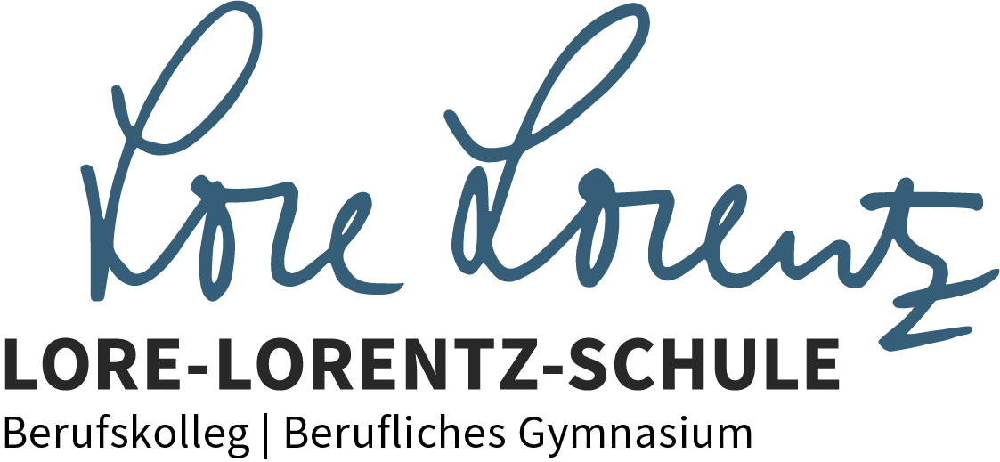

🌿 Umweltschutztechnik
UTEC 12NC · Interaktive Materialien · 2025/26
Willkommen!
Hier finden Sie alle interaktiven Lernmaterialien für den UTEC-Unterricht. Tippen Sie auf ein Thema, um loszulegen.
Q3
Abfallwirtschaft
📋
Lernliste Abfallwirtschaft
KrWG, Abfallhierarchie, MVA, Deponien
→
🏭
Aluminiumgewinnung
Bayer-Verfahren · Schmelzflusselektrolyse · Energiebilanz
→
♻️
Aluminium-Recycling
NEU
Energiebilanz · Trennverfahren · Wirbelstromabscheider · Quiz
→
📄
Arbeitsblatt Alu-Recycling (PDF)
NEU
Energieberechnung · Wirbelstromabscheider · Recyclingquoten · Downcycling
↓